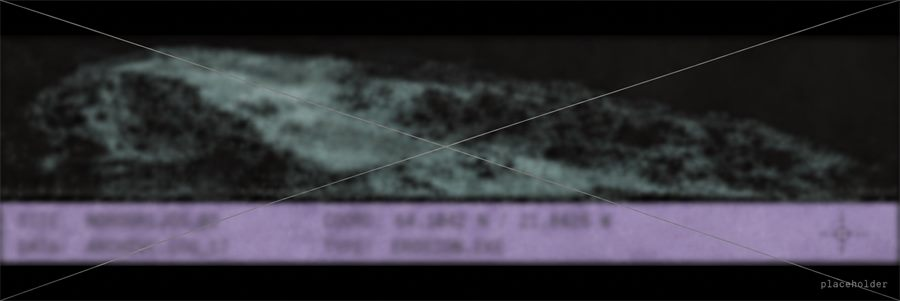

CURRENTLY UNDER DEVELOPMENT… SINGLE-PAGE PREVIEW.
A virtual project space for experiments, works in progress and writing.
A dumping ground / a laboratory for unfinished structures, graphic debris, notes and ideas without a final destination. Browse the no-man’s-land of unresolved work.
SYSTEM OFFLINE / UNDER CONSTRUCTION / 00 OBJECTS AVAILABLE CURRENTLY
- [ ZINE_003.PDF ]
404 / PAGE MISSING / UNDER CONSTRUCTION
… - NOTE_027
404 / PAGE MISSING / UNDER CONSTRUCTION - [ OPEN ESSAY ]
404 / PAGE MISSING / UNDER CONSTRUCTION - [ RUN EXPERIENCE ]
404 / PAGE MISSING / UNDER CONSTRUCTION

!! buffer fault
LAST MUTATION: ??.??.??